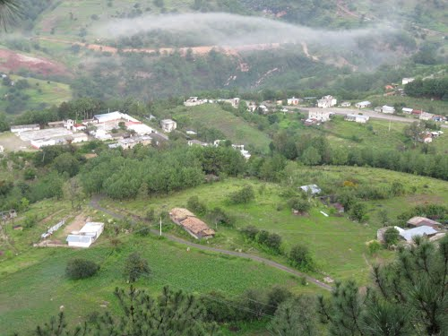

|
| |
La comunidad de Agua Zarca fue fundada en el año de 1988 ,aunque tardo muchos años para logar volverse independiente con el esfuerzo de los señores Emiliano López,Tomas López Coronel,Pedro Coronel Reyes que tuvieron que ir con el Agente del Ministerio a solicitarles volverse una comunidad indepebdiente ,dice que la razon fue porque los niños tenian que caminar extensos tramos para llegar a cuquila a tomar sus clases todos los dias y eso les generaba conflicto mas que nada a los padres de familia ya que tenian que ir a dejar todos los dias a sus hijos ,de igual manera por las lluvias ya que algunos tenian que cruzar rios para llegar a la escuela y era peligroso para ellos. Al comienzo llego la escuela a la comunidad no se estableció en un lugar fijó,sino que cada cierto tiempo cada ciudadano prestaba su casa para que el Maestro Fernández Hernandez originario de Nuyoo tuviera un espacio para enseñarle a los niños. Paso el tiempo y con esfuerzo de los ciudadanos lograron subir de categoría ,comenzó siendo Núcleo Rural,luego Agencia de Policía y actualmente Agencia Municipal.  |